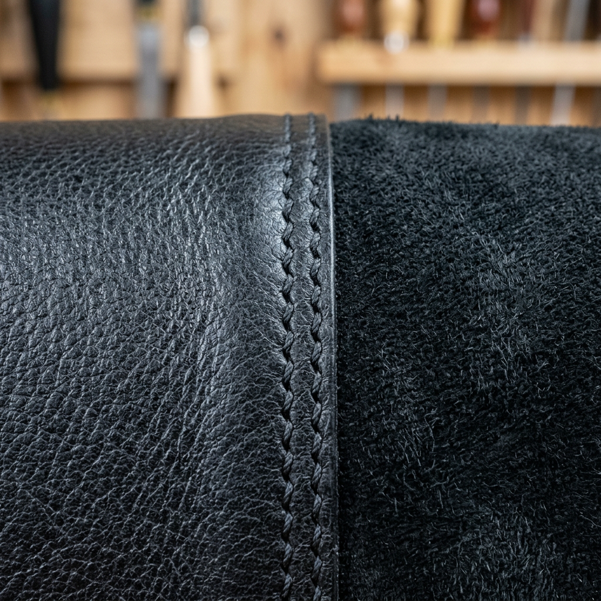

The Ultimate Guide to Selecting the Perfect Black Shoes: A Masterclass in Style and Versatility
The Dilemma of the 'Simple' Black Shoe
It is the most common fashion misconception: buying shoes for black outfits is easy. Most shoppers believe that because black is a neutral, any dark footwear will suffice. However, high-intent buyers and style connoisseurs know the truth. The wrong texture, a mismatched silhouette, or a lack of depth can turn a sophisticated look into a flat, uninspired ensemble. The pain point isn't finding a black shoe; it's finding the right shoe that commands respect and communicates authority.
Whether you are dressing for a high-stakes boardroom meeting, a formal gala, or a minimalist street-style look, your footwear is the foundation of your aesthetic identity. If the foundation is weak, the entire image crumbles. In this guide, we will break down the psychology of black footwear and how to select a pair that offers both longevity and unmatched style.
The Psychology of All-Black Footwear
Psychologically, black represents power, elegance, and mystery. When you search for the perfect shoes for black attire, you aren't just looking for utility; you are looking for a way to project confidence. The key to avoiding a 'monotonous' look is visual contrast through texture.
- Polished Leather: Projects traditional authority and formal precision.
- Matte Suede: Softens the look, adding a layer of approachable luxury and depth.
- Patent Leather: Reserved for the highest level of formality, reflecting light to break up dark fabrics.
- Technical Fabrics: Ideal for modern, urban aesthetics where performance meets style.
Material Matters: Why Your Choice Defines Your Longevity
When investing in shoes for black ensembles, the material is the primary driver of the 'Cost Per Wear' ratio. A high-quality full-grain leather shoe will not only breathe better but will develop a patina that adds character over time. Conversely, synthetic materials often trap heat and crack, leading to a 'cheap' appearance after only a few months of use.
For those seeking a versatile option, pebbled leather is an expert's secret. It provides a rugged texture that hides scuffs while remaining sophisticated enough for business casual environments. If your goal is a sleek, modern silhouette, look for calfskin, known for its fine grain and incredible durability.

The Silhouette Strategy: Matching Shoes to Your Frame
The silhouette of your shoe should complement the cut of your trousers. This is where many buyers fail. If you are wearing slim-cut black chinos or tailored trousers, a bulky, wide-toed shoe will create a visual imbalance.
1. The Sleek Oxford or Derby
For formal settings, a tapered toe box is essential. It extends the leg line, making the wearer appear taller and more streamlined. This is the gold standard for black-tie events or corporate environments.
2. The Modern Minimalist Sneaker
The 'shoes for black' category has been revolutionized by the luxury sneaker. A low-profile, all-black leather sneaker can now be paired with a suit for a 'power-casual' look. The key here is the sole; a monochromatic black sole maintains the formal silhouette, while a white sole adds a sporty, high-contrast pop.
3. The Chelsea Boot
A timeless classic that bridges the gap between casual and formal. The laceless design provides a clean, uninterrupted flow of black from the ankle down, which is highly effective for creating a cohesive, slimming effect.
Maintenance: Keeping the 'Deep Black' Aesthetic
The greatest enemy of a black shoe is fading and dust. To maintain a high-conversion style, you must invest in the 'After-Care' process. Black shoes show scuffs more prominently than brown or tan. Experts recommend a high-pigment cream polish rather than a wax-only polish. The cream penetrates the leather to restore the deep obsidian hue, while the wax provides the protective shine.
For suede options, a brass-bristled brush and a hydrophobic protector spray are non-negotiable. Keeping the 'black' in your shoes looking deep and rich is what separates a professional look from an amateur one.
Final Verdict: How to Choose Your Perfect Pair
Selecting the right shoes for black outfits comes down to your primary environment. If you spend 80% of your time in professional settings, a Cap-Toe Oxford in Full-Grain Leather is your undisputed winner. It is a timeless investment that never goes out of style.
If your lifestyle demands versatility, the Black Leather Chelsea Boot offers the best ROI, transitioning seamlessly from weekend social events to weekday office hours. Finally, for the modern minimalist, a Matte Leather Luxury Sneaker provides the comfort of an athletic shoe with the visual weight of a dress shoe.
Remember: in the world of fashion, black is a canvas. Your shoes are the signature. Choose a pair that reflects the quality and authority you want to project to the world.